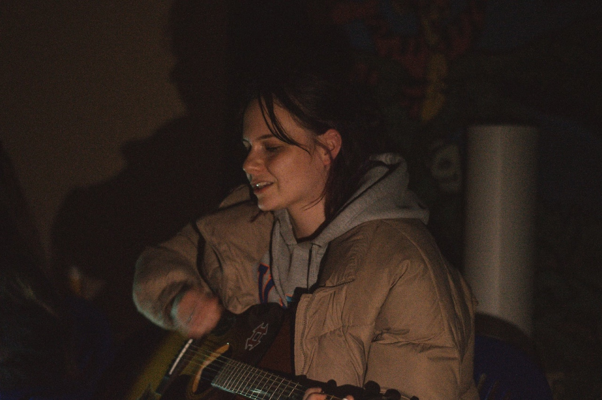
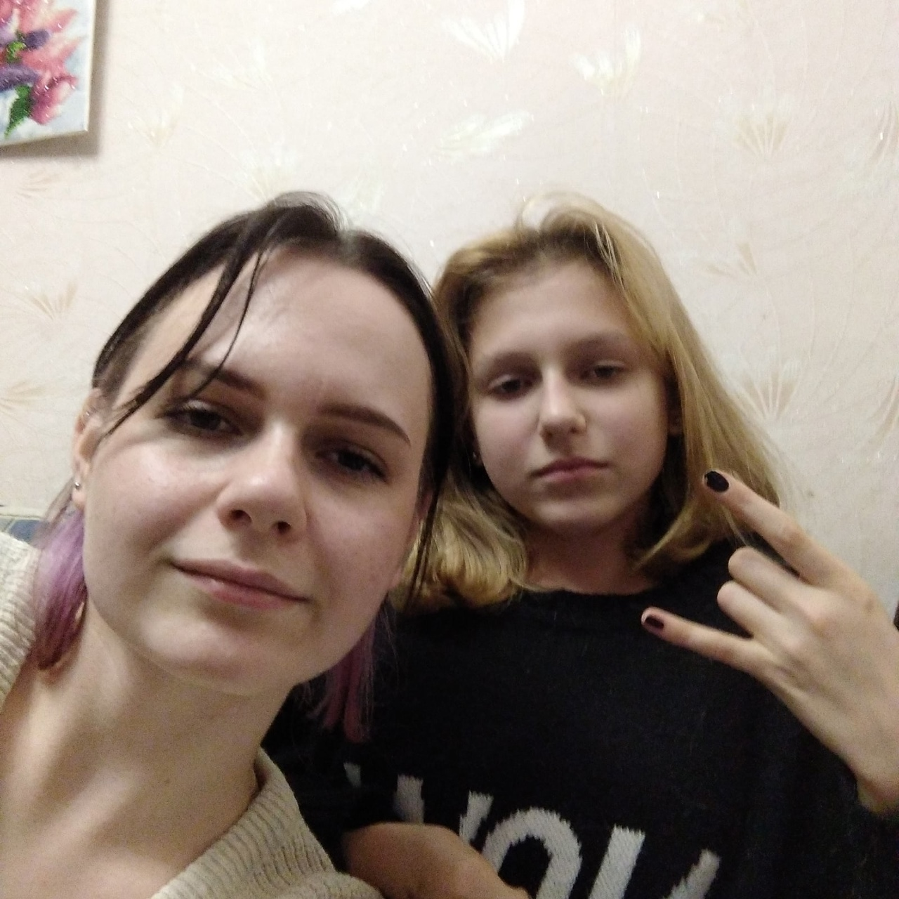
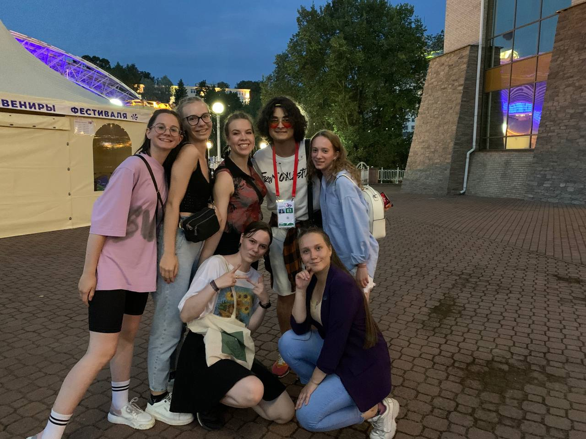
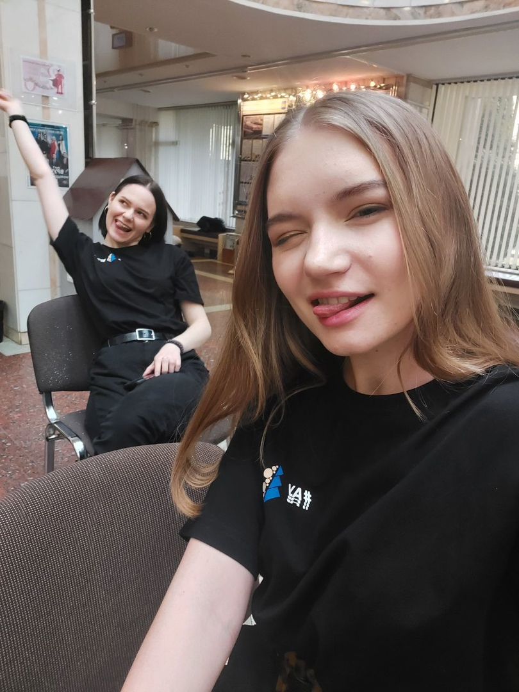
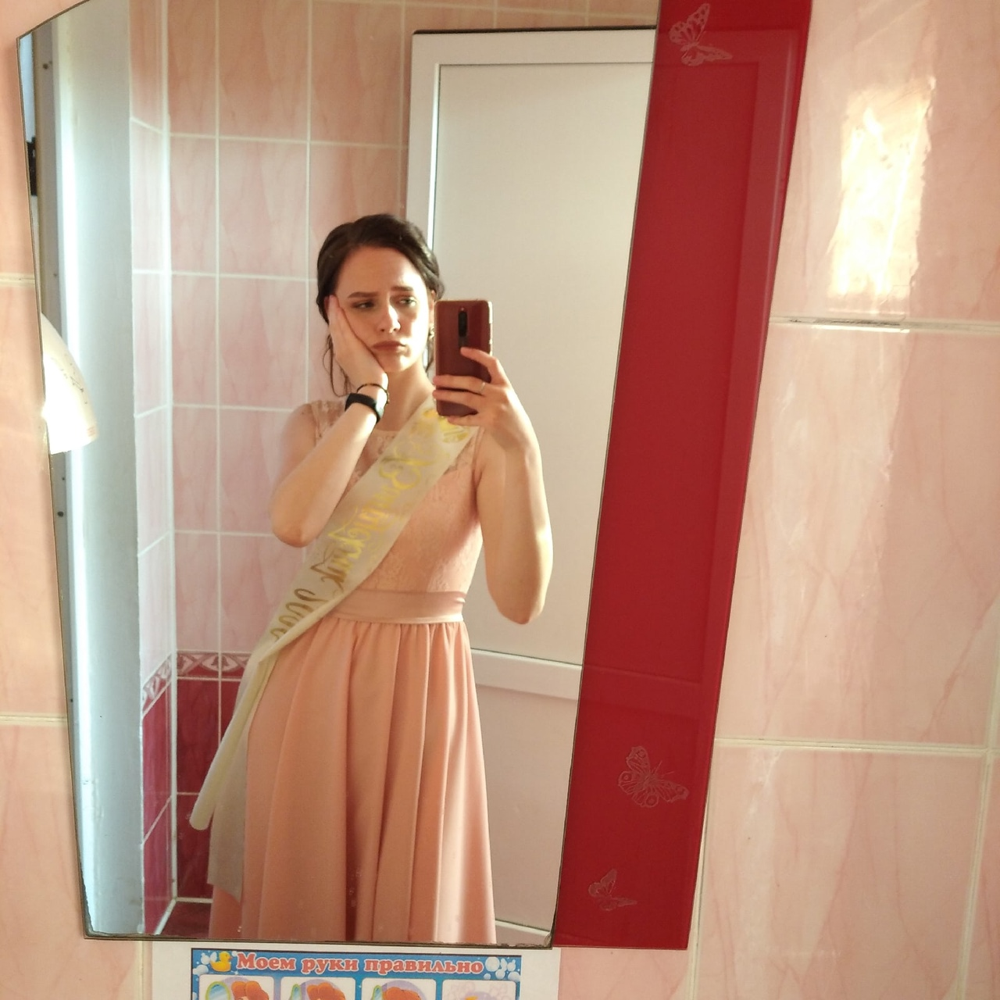

Родилась 06.04.2003 в Ошмянах. Это такой маленький город на западе страны. Она очень его любит, потому как он уютный и спокойный, не то, что Минск. Ходила в третью школу.
Анастасия Семёнова



У Насти есть сестра Люба. Она, в отличии от Насти, смелая и активная, может сказать человеку в лицо, если ей что-то не нравится.
Настя творческий человек, поэтому обычно пары вышки и аипа для Насти сплошное страдание. Она любит рисовать и петь. Еще играет на пианинке и гитаре и очень хочет освоить скрипку.


Конечно же любимое занятие, помимо творчества, это компьютерные игры. Она считает себя гуру РПГ и прошла на своем веку много всякого.
У Насти есть 2 кота — Ёсик и Зюзик. Она любит спорт. Ну как сказать спорт, любит покататься на роликах, велике, скейте. Любит испытывать свое тело на прочность, потому всегда соглашается на всевозможные квесты, походы в батутные центры и т.д. А сейчас с удовольствием играет в теннис.

"У Насти есть мечта — уехать жить в горы, ведь она обожает горы! Если около них будет море, то это просто рай, а не место. А еще она хочет стать разработчиком компьютерных игр, желательно дизайнером, ну или писать сюжеты для игр, короче где-нибудь в этой сфере."